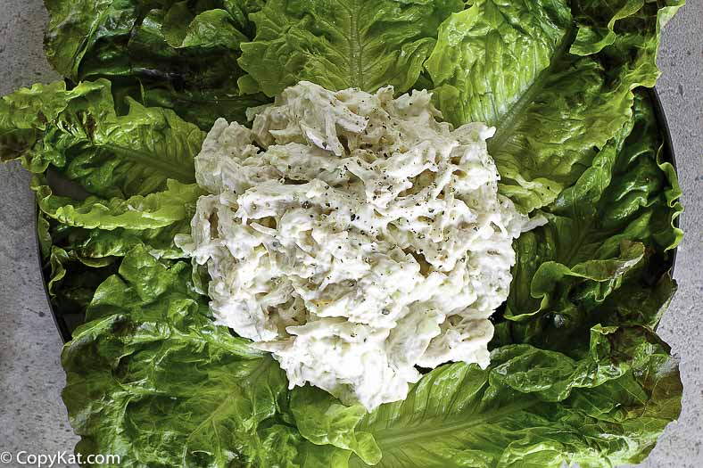

Chicken Salad Chick's Classic Carol:
Ranch dressing seasoning is the secret ingredient in this easy to prepare
chicken salad that goes well over a kale salad for a simple and healthy lunch
Ingredients:
- 1lb chicken breast or thighs.
- 1 packet Hidden Valley ranch dressing seasoning.
- 1 cup mayonaise.
- 2/3 cup sour cream or greek yogurt.
- 1/4 cup olive oil.
- Foil.
- Salt and pepper to taste.
Preparation:
- Season chicken with salt and pepper and olive oil and wrap in foil.
- Cook chicken in foil packets in over at 350 degrees.
- While chicken is cooking, combine ranch seasoning, mayo, greek yogurt, and remaining olive oil.
- Once chicken is out of oven and cooled slightly, cut up into large cubes and add to bowl of stand mixer.
- Add mayo mix to chicken in stand mixer and slowly increase speed until well shredded and dressing is incorporated.
- enjoy!